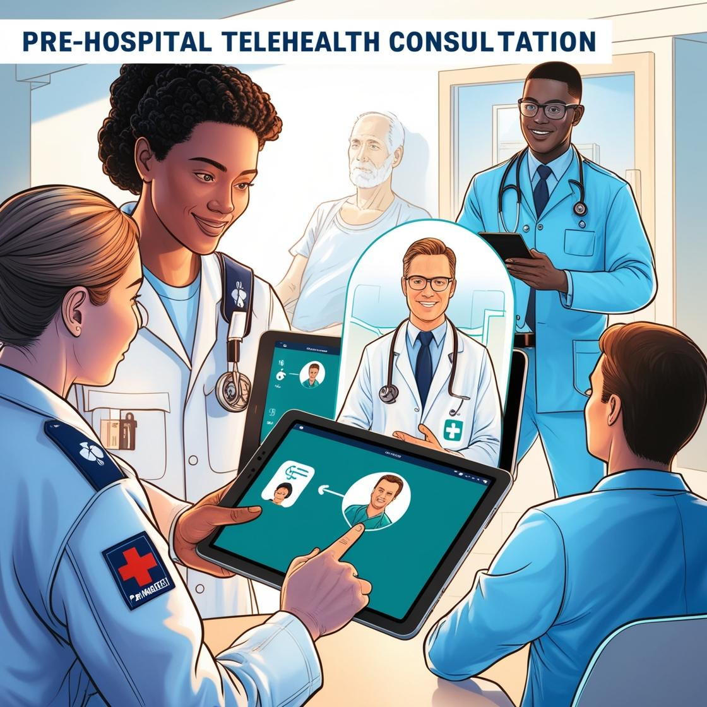

Pre-Hospital Telehealth Care Cost Savings Model: Part One
Model Overview
The model aims to answer the question: "What would be the total 2024 annual cost savings of introducing the pre-hospital telehealth care system (ETHAN), in federal reported state emergency departments within the U.S.?" The model illustrates the total cost savings to providers and patients, per state, from adopting the ETHAN system, using modeled cost savings from a 2016 "Cost Benefit Analysis of telehealth in pre-hospital care" study, conducted in Houston, Texas.
The Electronic Telehealth Navigation (ETHAN) system "uses telehealth-based consultations between 911 patients and EMS physicians, to evaluate and triage the necessity for patient transport to a hospital emergency department." The cost savings were calculated from the State Emergency Department Database (SEDD), which provides the total emergency department visits across the U.S., that do not end in hospital admissions.
The data comprises emergency department visits reported by the U.S. Department of Health and Human Services' Agency for Healthcare Research and Quality (the lead federal agency responsible for improving the quality of America's health-care system through producing research, tools and data).
Methodology
A. Study Results: Using the results of the study, I simulated cost savings across HCUP member states in the U.S. The study uses a case-control approach to compare the costs of emergency department visits to the case group (telehealth evaluated EMS patients) and a control group (patients with similar characteristics that did not receive telehealth-EMS interventions).
Cost savings were realized by patients in the case group through using telehealth to screen patients prior to being transported to emergency departments. Based on the telehealth professionals assessment, eligible patients who did not require visiting an emergency department were directed towards "non-ED locations using taxi based transport" rather than "more resource-intensive" ambulances. (Figure 1)
B. Patient Savings: The results of the study was a 6.7% absolute reduction in hospital ED visits and a $357,200 annual cost savings for emergency department visits. This was calculated by multiplying the reduction in study participants by the primary care emergency department costs (PCRED) for the state of Texas.
Using annual patient visits per state from the SEDD database and the PCRED costs by regions within the U.S. I calculated patient cost savings per state in 2021. However, due to data being unavailable for the state of Nebraska in 2021, I utilized the multiseries covariate forecasting method in Python, to estimate total 2021 emergency department visits. (Figure 2)
B(i). Multivariate time series models are often used in predicting maintenance intervals for industrial machines (such as wind turbines and energy plants, by combining sensor data, such as temperature and mechanical stress, to determine wear and tear and the approximate time till equipment failure. Eleven year emergency department visits for the 31 represented states is split between "test" (2009-12-31 to 2020-12-31) and "training" (2021-01-01 to 2021-12-31) datasets. The recursive forecasting method "LightGBM" is used to train the model to forecast 2021 visits.
Multiseries recursive forecasting is used to capture similar, underlying trends resulting from changes impacting states across the U.S., along with annual trends in each state. A lag of 1 ensures the model uses the most recent year's predicted value, as input for the following year, to capture short-term trends resulting from changes in insurance provider policies, federal healthcare spending, or health outbreaks such as Covid19. A short rolling window ensures that the model does not annually smooth out short-term fluctuations. The model yields 985,809 predicted emergency visits for Nevada in 2021. Additionally, the model's prediction interval indicates a 95% confidence that the true emergency department visits lie between 849,600 and 1,022,703. (Figure 3)
C. Provider Savings: Provider savings was calculated from the study's per visit cost savings of $103. The model then calculates the predicted cost savings across the 31 HCUP states using the real price parity index (RPP), using the state of Texas as the base.
The previously forecasted state Emergency Department visits are then used to calculate the total potential savings in 2021, scaling cost savings to 2024, using compounded annual healthcare inflation rates from 2021 to 2024. (Figure 4)
D. Combined Cost Savings is simply the addition of patient and provider cost savings to represent the total annual community savings for each state (Figure 5).